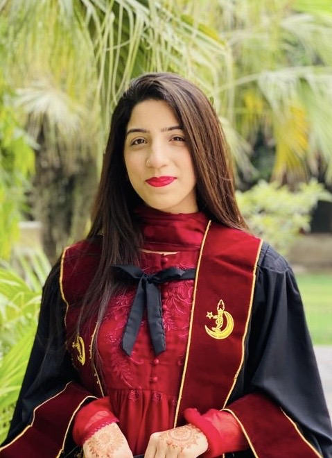

Hope • Humanity • Health
Building healthier communities through compassion, humanitarian service, and accessible healthcare for all.
Accessible healthcare services.
Free medical outreach across rural regions.
Providing emergency relief, essential supplies, financial assistance, and compassionate support to families affected by floods, natural disasters, and humanitarian crises.
Dedicated healthcare professionals committed to quality care and community wellbeing
